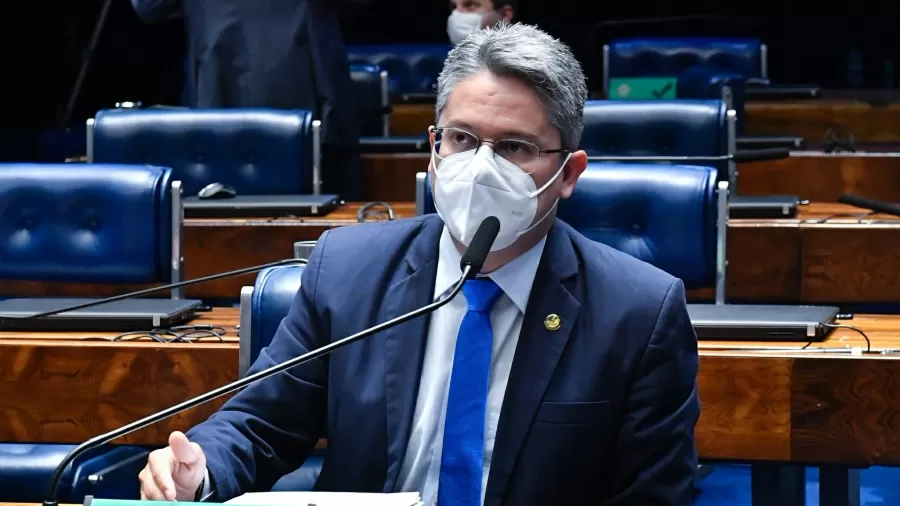
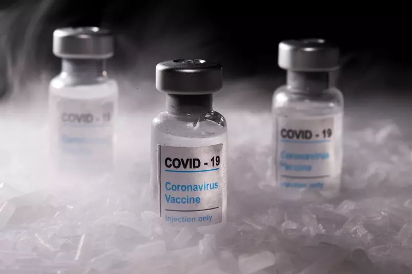
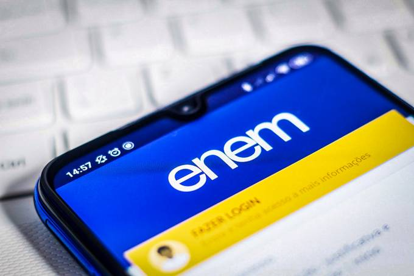

Notícias do momento
Política
Senador irá a Justiça contra aquisição de aparelho espião por ministério
Lucas Valença, do Uol.

O senador Alessandro Vieira (Cidadania-SE) protocolará na Justiça Federal de Brasília uma ação popular contra a aquisição de um aparelho espião
pelo Ministério da Justiça e Segurança Pública.
Hoje, o UOL mostrou a interferência do vereador carioca Carlos Bolsonaro (Republicanos-RJ),
filho do presidente Jair Bolsonaro (sem partido), em uma licitação que poderá contratar um poderoso sistema de espionagem conhecido como Pegasus.
A ferramenta foi desenvolvida pela empresa israelense NSO Group.
Para o senador oposicionista, a incorporação de novas tecnologias aos trabalhos de Segurança Pública é essencial, mas deve seguir os
"limites da legislação brasileira", que veda expressamente a prática de "investigação clandestina".
"Qualquer ferramenta que permita quebras de sigilo
e interceptação deve ser passível de auditoria, que permita identificar com clareza os agentes responsáveis por cada acesso e os alvos de cada ação,
bem como o alcance da operação e a respectiva autorização judicial", afirmou.
A licitação para a aquisição de uma ferramenta de espionagem também expôs
a disputa entre o alto comando militar e o filho "02" do presidente. O objetivo de Carlos Bolsonaro, porém, é usar as estruturas do Ministério da Justiça
e da PF (Polícia Federal) para expandir uma "Abin paralela".
O maior problema é que, se adquirido, os dados e informações de brasileiros e de empresas nacionais
obtidas pelo Pegasus poderão ser armazenadas no exterior, o que os militares entendem como uma questão de segurança nacional.
Mais cedo, o deputado e líder
da minoria na Câmara, Marcelo Freixo (PSOL-RJ), informou que pedirá a convocação do vereador na CCAI (Comissão Mista de Controle das Atividades).
Saúde
Vacina contra covid da Sanofi e GSK tem resultados positivos em testes da fase 2
Naomi Thomas, da CNN.

A potencial vacina das gigantes farmacêuticas francesa e britânica Sanofi e GlaxoSmithKline mostrou uma forte resposta imunológica em adultos de 18 a 95 anos
e nenhum evento preocupante de segurança em seu ensaio de fase 2, disseram as empresas em um comunicado à imprensa na segunda-feira (17). Um grande ensaio
de fase 3 deve começar nas próximas semanas, disseram.
O ensaio envolveu 722 voluntários nos Estados Unidos e em Honduras, que receberam duas injeções com 21 dias de intervalo e em três níveis de dosagem diferentes.
As empresas disseram que a vacina desencadeou anticorpos neutralizantes comparáveis aos gerados pela infecção natural, com níveis mais elevados entre pessoas
de 18 a 59 anos.
Os participantes que já haviam sido infectados com Covid-19 mostraram altos níveis de anticorpos neutralizantes após uma única dose, sugerindo a injeção
pode funcionar como um reforço, segundo as empresas.
Os resultados da fase 2 ainda não foram revisados por pares ou publicados em um jornal médico.
O que vem a seguir: as empresas disseram que em breve iniciarão um teste global de Fase 3, que deve inscrever mais de 35.000 adultos de vários países.
O ensaio usará a dose de 10 microgramas da vacina à base de proteína em combinação com o adjuvante de reforço imunológico da GSK. As empresas também conduzirão
estudos com várias formulações de variantes para avaliar a vacina como reforço, independentemente da vacina inicial que a pessoa recebeu.
Com resultados positivos da Fase 3 e análises regulatórias, a vacina poderia ser aprovada para uso no quarto trimestre de 2021, disseram as empresas.
“Nossos dados da Fase 2 confirmam o potencial desta vacina para desempenhar um papel na abordagem desta crise de saúde pública global em curso, pois sabemos
que várias vacinas serão necessárias, especialmente porque as variantes continuam a surgir e a necessidade de vacinas eficazes e de reforço, que podem ser
armazenado em temperaturas normais, aumenta”, disse Thomas Triomphe, vice-presidente executivo e chefe global da Sanofi Pasteur, no comunicado.
“Com esses resultados favoráveis, estamos prontos para avançar para um estudo de eficácia global de Fase 3. Esperamos gerar dados adicionais e trabalhar
com nossos parceiros em todo o mundo para disponibilizar nossa vacina o mais rápido possível.”
No final do ano passado, a Sanofi e a GlaxoSmithKline atrasaram o lançamento da vacina depois que resultados provisórios mostraram resposta imunológica
insuficiente em idosos.
Educação
Governo admite não ter verba para pagar Enem e bolsas científicas
Estadão.

O Ministério da Educação (MEC) admitiu em documento ao ministro da Economia, Paulo Guedes, que a verba destinada ao Exame Nacional do Ensino Médio (Enem)
de 2021 é insuficiente para aplicar a prova em todos os participantes. Também vai faltar dinheiro para pagar bolsas de 92 mil cientistas, incluindo
pesquisadores da covid-19, médicos residentes e para livros didáticos. Em ofício obtido pelo Estadão, a pasta pede dinheiro para "viabilizar projetos"
e fala em impactos pedagógicos "imensos".
O documento encaminhado anteontem pelo ministro da Educação, Milton Ribeiro, à Economia pede o desbloqueio de R$ 2,7 bilhões e a suplementação de
R$ 2,6 bilhões, sob o risco de deixar sem verba "diversas demandas essenciais à área da educação", entre elas a realização do Enem. O MEC foi a pasta
mais atingida pelo bloqueio de verbas realizado em abril pelo presidente Jair Bolsonaro.
Para aplicar o Enem, o Instituto Nacional de Estudos e Pesquisas Educacionais (Inep), órgão ligado ao MEC e responsável pelo exame, prevê gastar
R$ 794 milhões este ano. Com R$ 226,7 milhões bloqueados, o orçamento total do Inep é de R$ 1,183 bilhão, mas seria necessário quase o dobro
do dinheiro para atender às necessidades da autarquia, que também realiza outras avaliações educacionais.
"Especificamente com relação ao Enem, a insuficiência orçamentária resultaria na inexecução dos serviços, tendo em vista a quantidade de participantes
prevista para 2021", aponta o ofício. O Inep estima ter 6 milhões de alunos inscritos nesta edição do Enem, além de 100 mil estudantes na aplicação da
prova digital. "O montante disponibilizado não atenderia a totalidade de aplicações/participantes previstas, o que de fato poderia trazer prejuízos às
aplicações do Enem e ao Inep", afirma o MEC.
No mesmo documento, o MEC cita ainda os prejuízos à pesquisa brasileira, com cortes na Coordenação de Aperfeiçoamento de Pessoal de Nível Superior (Capes),
fundação que fomenta a pós-graduação. Segundo a pasta, todos os 92.377 bolsistas de mestrado, doutorado e pós-doutorado "não poderão ser pagos" a partir
de novembro. "Entre o total de bolsas, cabe destacar a interrupção do pagamento de 795 bolsistas vinculados a 109 projetos de combate à covid-19,
com o envolvimento de 1.280 pesquisadores", destaca o ofício. Além do desbloqueio de verbas, a Capes precisa de R$ 121,5 milhões para garantir
pagamento aos bolsistas.
Faltam ainda recursos para o programa de residência médica. O dinheiro recebido até agora será suficiente para pagamento das bolsas até setembro e o MEC
já prevê reduzir o programa. Residentes têm atuado diretamente no combate à pandemia em hospitais. "O valor atual programado para a ação orçamentária
contempla recursos suficientes para a manutenção de apenas 10.800 bolsas de residência, de um total de 13.883." A contratação de supervisores e tutores
para o programa Mais Médicos também fica comprometida.